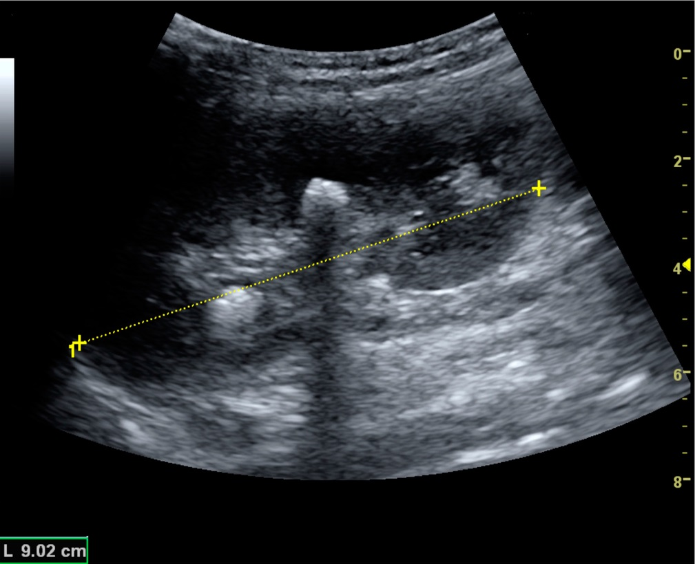

Ultrasound images contain more than just anatomical structures. Sometimes, the way the ultrasound beam interacts with a structure changes how the area behind it looks.
Two common examples are acoustic shadowing and posterior acoustic enhancement. One produces a darker area behind a structure, while the other produces a relatively brighter area.
The easiest way to understand the difference is to follow the ultrasound beam and ask: How much sound energy is reaching the tissue behind the structure?
First, What Does “Posterior” Mean?
In ultrasound, posterior simply means deeper than the structure being examined.
So when we say “posterior enhancement,” we are talking about the area located deeper than the cyst or other structure.
Acoustic Shadowing
Acoustic shadowing occurs when a structure greatly reduces the amount of ultrasound energy that continues deeper into the body.
This can happen because of strong reflection, absorption, attenuation, or a combination of these interactions.
As a result, less sound reaches the tissues behind the structure. With less returning echo information from that deeper region, the area appears darker on the ultrasound image.
Think: Strong interaction with the ultrasound beam → less sound reaches deeper tissues → fewer useful returning echoes → darker area behind.
What Can Cause Acoustic Shadowing?
Shadowing is commonly associated with structures that strongly reflect or attenuate ultrasound.
- Gallstones or other stones
- Calcifications
- Bone
- Some highly attenuating structures
- Gas or air, which can produce a characteristic “dirty” shadow
The exact appearance depends on how the ultrasound beam interacts with the structure.
A Classic Example: A Stone
A stone can act as a strong reflector and attenuator. A large portion of the ultrasound energy is reflected or otherwise prevented from producing useful information from deeper tissues.
The result is a relatively dark region immediately behind the stone. This is the classic appearance of posterior acoustic shadowing.

Why Does the Shadow Look Dark?
Ultrasound systems form images using returning echoes. When much less sound reaches the deeper tissues, there is less returning information from that region.
The system therefore displays the area behind the strongly attenuating structure as relatively dark.
It does not mean that the tissue behind the structure has disappeared. It means that the ultrasound beam has not provided the usual amount of information from that region.
Clean Shadowing vs Dirty Shadowing
Not every acoustic shadow looks exactly the same.
Clean Shadowing
A clean, sharply defined shadow is commonly seen behind structures such as stones, calcifications, and bone.
Dirty Shadowing
Gas or air can produce a more irregular or “dirty” shadowing pattern. Multiple reflections and scattering around gas can contribute to this appearance.
So the appearance of the shadow can itself provide useful information about the type of structure producing it.
Posterior Acoustic Enhancement
Posterior acoustic enhancement is almost the opposite situation.
Here, the ultrasound beam passes through a structure that causes relatively little attenuation, such as simple fluid.
Because less of the beam is lost while passing through the structure, more ultrasound energy reaches the tissues behind it.
Those deeper tissues can therefore produce stronger returning echoes, making the region behind the structure appear relatively brighter.
Think: Low attenuation → more sound reaches deeper tissues → stronger returning echoes → relatively brighter area behind.
A Classic Example: A Simple Cyst
A simple cyst contains fluid and usually has very little internal structure to produce echoes.
Ultrasound can pass through the fluid with relatively low attenuation. More of the beam can therefore continue beyond the cyst and interact with the tissue deeper to it.
This produces the characteristic posterior acoustic enhancement seen behind many simple cysts.

Why Is the Cyst Itself Black?
This is an important point because two things are happening at the same time.
A simple cyst usually appears anechoic, meaning that there are very few internal echoes returning from the fluid itself. That is why the cyst appears black.
But the ultrasound beam can still travel through the fluid. More of the beam reaches the tissue beyond the cyst, producing the brighter appearance behind it.
+
Low attenuation → More sound reaches deeper tissue → Posterior enhancement
Shadowing vs Enhancement — The Main Difference
| Feature | Acoustic Shadowing | Posterior Enhancement |
|---|---|---|
| Typical appearance behind structure | Darker | Brighter |
| What happens to the beam? | Much of the ultrasound energy is reflected, absorbed, or attenuated | Relatively little energy is lost through the structure |
| What reaches deeper tissue? | Less ultrasound energy | More ultrasound energy |
| Typical example | Stone or calcification | Simple cyst |
| Effect on deeper echoes | Reduced | Relatively increased |
Think of the Ultrasound Beam Like a Journey
A simple way to remember both artifacts is to imagine the ultrasound beam travelling through the body.
With Shadowing
With Enhancement
Why Does Enhancement Look “Brighter” Than the Surrounding Tissue?
Ultrasound systems use assumptions about how sound energy decreases as it travels through tissue.
When sound passes through a relatively low-attenuating structure, such as simple fluid, more energy can reach deeper tissues than the system may expect based on surrounding tissue.
The deeper echoes can therefore appear relatively brighter. This is part of why the area behind a cyst may look brighter than the corresponding tissue beside it.
This brightness is an imaging appearance caused by the interaction between the ultrasound beam and the tissues. It is not a separate tissue or structure that has suddenly become brighter.
Are These Really “Artifacts”?
Yes. Both shadowing and enhancement are commonly described as ultrasound artifacts because the displayed image is influenced by the assumptions and physics used to create the image.
But “artifact” does not mean “useless.”
In fact, these appearances can provide useful clues about what the ultrasound beam encountered.
Why Shadowing Can Actually Be Helpful
When a strong, characteristic shadow is seen behind a structure, it can support the recognition of structures such as stones or calcifications.
The shadow therefore gives information about how the structure interacts with ultrasound, rather than simply being an unwanted problem.
Why Enhancement Can Be Helpful
Posterior enhancement is commonly associated with fluid-containing structures because fluid usually produces relatively low attenuation.
A simple cyst is a classic example. However, enhancement should be interpreted together with the rest of the ultrasound appearance rather than used as a diagnosis by itself.
What About the Edges of a Cyst?
Sometimes a cyst can show a thin dark line or shadow near its lateral edges. This is called edge shadowing.
It is different from the broad posterior shadowing seen behind a stone. Edge shadowing can occur because the curved boundary of a structure changes the direction of the ultrasound beam through refraction.
So when looking at a cyst, you may encounter both posterior enhancement and subtle edge shadowing.
A Practical Comparison
Imagine two structures placed in the path of the ultrasound beam.
The first strongly interferes with the beam. Less sound reaches the tissue behind it, so the deeper region becomes darker.
The second allows the beam to pass through with relatively little attenuation. More sound reaches the tissue behind it, so the deeper region becomes relatively brighter.
The key difference is therefore not simply “stone versus cyst.” The deeper concept is what happens to the ultrasound energy as it travels through the structure.
A Common Student Mistake
A common shortcut is to memorize:
“Stone = shadow” and “cyst = enhancement.”
These examples are useful, but memorizing only the examples can make the concept harder when a different structure appears.
A better approach is to ask:
- How strongly is the ultrasound beam being attenuated or reflected?
- How much sound is reaching the deeper tissues?
- What kind of returning echoes should I expect from that deeper region?
Once you understand those three questions, the appearance becomes much easier to reason through.
One Important Point: Enhancement Does Not Automatically Mean “Benign”
Posterior enhancement can be a useful clue for fluid-containing structures, but it is not a diagnosis and is not specific to benign lesions.
Similarly, acoustic shadowing does not automatically mean that a structure is malignant. Shadowing can occur in a range of benign conditions as well.
In clinical ultrasound, these findings are interpreted together with the shape, margins, internal characteristics, location, clinical context, and other imaging features.
The Opposite Relationship
The easiest way to connect both concepts is to remember their opposite effect on the tissues behind the structure.
A Simple Example to Remember
If you see a stone, think about what happens when the ultrasound beam encounters a strong reflector or attenuator:
Less sound gets through → less information from behind → shadow.
If you see a simple cyst, think about what happens when the beam travels through low-attenuating fluid:
More sound gets through → stronger deeper echoes → enhancement.
Quick Recap
- Acoustic shadowing is a relatively dark region behind a structure that greatly reduces the ultrasound energy reaching deeper tissues.
- Stones, calcifications, and bone are common examples associated with shadowing.
- Posterior acoustic enhancement is increased brightness behind a relatively low-attenuating structure.
- A simple fluid-filled cyst is a classic example of posterior enhancement.
- The key concept is how much ultrasound energy reaches the tissue behind the structure.
- Neither shadowing nor enhancement should be interpreted in isolation; they are imaging clues that must be considered with the complete ultrasound appearance.
The Easiest Way to Remember It
Shadowing: the structure blocks or greatly reduces the beam → less sound reaches behind → darker.
Enhancement: the structure allows relatively more sound through → more sound reaches behind → brighter.
The real concept is not simply “stone = shadow” or “cyst = enhancement.” It is understanding what happened to the ultrasound beam.
Sources
- Clinical Significance of US Artifacts — Radiographics, RSNA.
- Intensive Care Ultrasound: I. Physics, Equipment, and Image Quality — PMC.
- Practical and illustrated summary of updated BI-RADS for ultrasonography — PMC.
- Ultrasonography of the Kidney: A Pictorial Review — Diagnostics / PMC.
- Ultrasound Physics and Technical Facts for the Beginner — SEMPA Sonoguide.